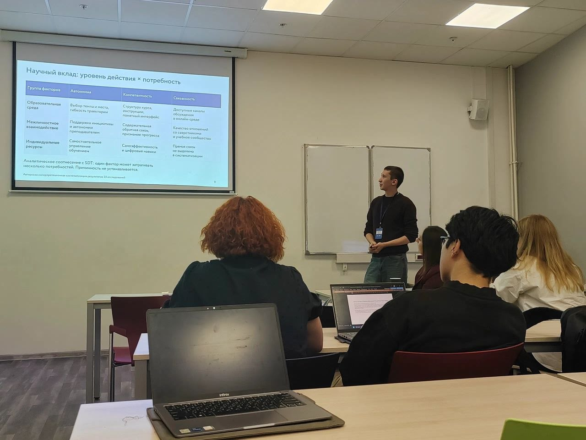
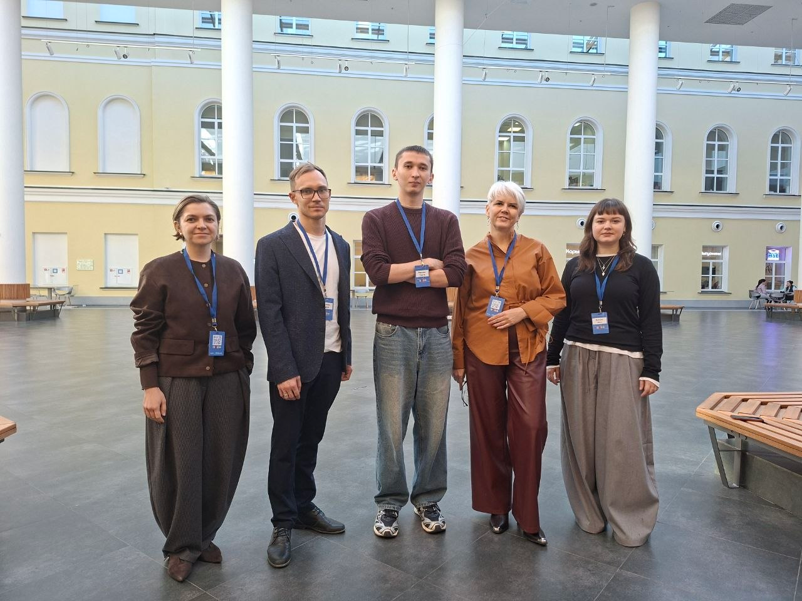

Как студенты учатся онлайн
- Исследователь
- Автор научных публикаций
- Докладчик
В двух работах об онлайн-обучении я изучал, что помогает студентам вузов сохранять мотивацию и как их можно поддержать на дистанционных курсах
Что этот опыт даёт UX-редактору
В магистратуре работаю с качественными методами. Опыт количественного анализа получил в бакалавриате, где работал с психодиагностическими метриками. При ревью записи на курс я бы посмотрел по данным, на каком шаге люди чаще всего останавливаются, и понаблюдал, как они проходят этот шаг. Так можно понять, что именно мешает, а после правки — сравнить долю завершённых записей.
Академическая мотивация в онлайн-обучении
Подготовил тематический обзор литературы об академической мотивации студентов вузов в контексте теории самодетерминации. Представил его на XVII Международной конференции исследователей высшего образования НИУ ВШЭ, которая прошла 28–30 октября 2026 года.
О конференции ИВО ↗



Сопровождение студентов в дистанционных курсах
С докладом о технологиях сопровождения в педагогическом дизайне дистанционных курсов выступил на VI Молодёжном Сибирском психологическом форуме 26 октября 2024 года и на XII Антропологических чтениях НИ ТГУ 22 декабря 2024 года
Публикации
С. С. Раевских. «Технологии сопровождения в современном педагогическом дизайне дистанционных образовательных курсов для студентов высшего образования». Научный руководитель — Е. Г. Сырямкина.
- Психология XXI века в исследованиях молодых учёных. Материалы VI Молодёжного Сибирского психологического форума. Томск: Вайар, 2024. С. 90–91.
- Антропологические чтения. Материалы XII Антропологических чтений НИ ТГУ. Томск, 2025. С. 166–170.